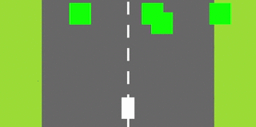
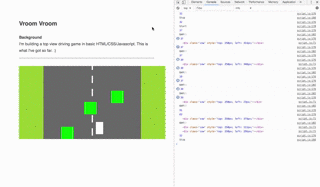

Smash Banana
Part 1
Following up on my experiment to code a moving road (as you would see it from a helicopter), I began building a driving game in Javascript. It will feature my Volvo once I get around to designing the graphics.
I switched from Processing to Javascript because HTML/CSS/JS are the real workhorses underneath the web and app tools that I design in my work and I wanted to better understand the limitations and possibilities of these languages.


It’s been a lot of fun. I have a long way to go. All of this is vanilla Javascript, that means no libraries. A library might already have something like collision detection where you give a function to objects and the function tells you if they are overlapping. I wanted to figure it out for myself. Did a little trigonometry – my favorite math in high school.
Next, I want the obstacles to bounce away from the car.